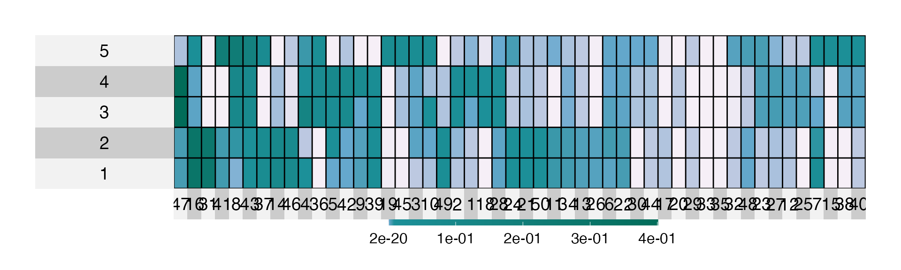
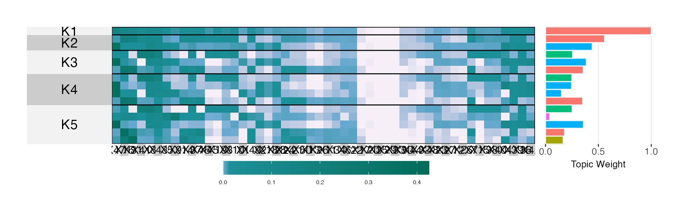

sim_equivalence.Rmd
library(alto)
#>
#> Attaching package: 'alto'
#> The following object is masked from 'package:stats':
#>
#> weights
library(dplyr)
#>
#> Attaching package: 'dplyr'
#> The following objects are masked from 'package:stats':
#>
#> filter, lag
#> The following objects are masked from 'package:base':
#>
#> intersect, setdiff, setequal, union
library(purrr)
library(readr)
library(stringr)
library(tibble)
source("https://raw.githubusercontent.com/krisrs1128/topic_align/main/simulations/simulation_functions.R")
my_theme()Now include the perturbed betas in the plot, and compare with estimates at a more refined \(K\).
sim_data <- equivalence_data(N, V, K, lambdas, S)
#> Warning in .recacheSubclasses(def@className, def, env): undefined subclass
#> "numericVector" of class "Mnumeric"; definition not updated
lda_params <- map(1:n_models, ~ list(k = .))
names(lda_params) <- str_c("K", 1:n_models)
alignment <- sim_data$x %>%
run_lda_models(lda_params, reset = TRUE) %>%
align_topics(method = params$method)
#> Warning in .f(.x[[i]], ...): Using default value 'VEM' for 'method' LDA parameter.
#> Warning in .f(.x[[i]], ...): Using default value 'VEM' for 'method' LDA parameter.
#> Warning in .f(.x[[i]], ...): Using default value 'VEM' for 'method' LDA parameter.
#> Warning in .f(.x[[i]], ...): Using default value 'VEM' for 'method' LDA parameter.
#> Warning in .f(.x[[i]], ...): Using default value 'VEM' for 'method' LDA parameter.
#> Warning in .f(.x[[i]], ...): Using default value 'VEM' for 'method' LDA parameter.
#> Warning in .f(.x[[i]], ...): Using default value 'VEM' for 'method' LDA parameter.
#> Warning in .f(.x[[i]], ...): Using default value 'VEM' for 'method' LDA parameter.
#> Warning in .f(.x[[i]], ...): Using default value 'VEM' for 'method' LDA parameter.
#> Warning in .f(.x[[i]], ...): Using default value 'VEM' for 'method' LDA parameter.
#> Warning in all(purrr::map(models, ~class(.) == "list")): coercing argument of
#> type 'list' to logical
#> Warning in all(purrr::map(models, ~all(names(.) %in% c("gamma", "beta")))):
#> coercing argument of type 'list' to logical
beta_hat <- alto:::plot_beta_layout(alignment)$betas
#> Joining, by = "k_LDA"
perturbed_topics <- do.call(rbind, sim_data$perturbed_topics)
similarities <- cosine_similarity(select(beta_hat, -m), perturbed_topics) %>%
as_tibble() %>%
mutate(
m = beta_hat$m,
rep = params$rep,
S = params$S
)
#> Warning: The `x` argument of `as_tibble.matrix()` must have unique column names if `.name_repair` is omitted as of tibble 2.0.0.
#> Using compatibility `.name_repair`.
cols <- alto:::superheat_defaults()$heat.pal
superheat::superheat(perturbed_topics, pretty.order.cols = TRUE, heat.pal = cols)
plot_beta(alignment, min_beta = 0, pretty.order.rows = TRUE)
#> Joining, by = "k_LDA"
plot(alignment)
sensitivity <- data.frame(
diff = sum(abs(similarities[, 2] - similarities[, 1]) +
abs(similarities[, 4] - similarities[, 3])),
subset_size = params$S,
rep = params$rep
)
id_vars <- params[c("out_dir", "method", "S", "rep", "N", "V", "K")]
if (params$save) {
dir.create(params$out_dir, recursive = TRUE)
write_csv(similarities, save_str("similarities", id_vars))
write_csv(sensitivity, save_str("sensitivity", id_vars))
exper <- list(sim_data, alignment)
save(exper, file = save_str("exper", id_vars, "rda"))
}